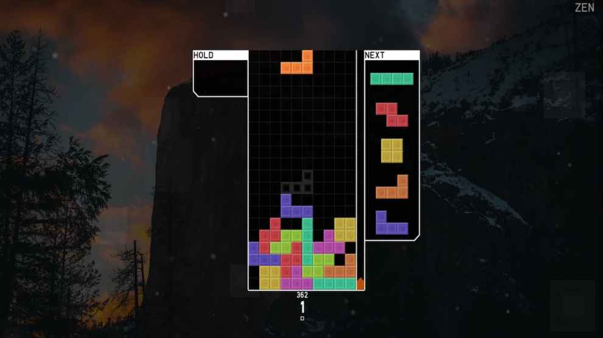
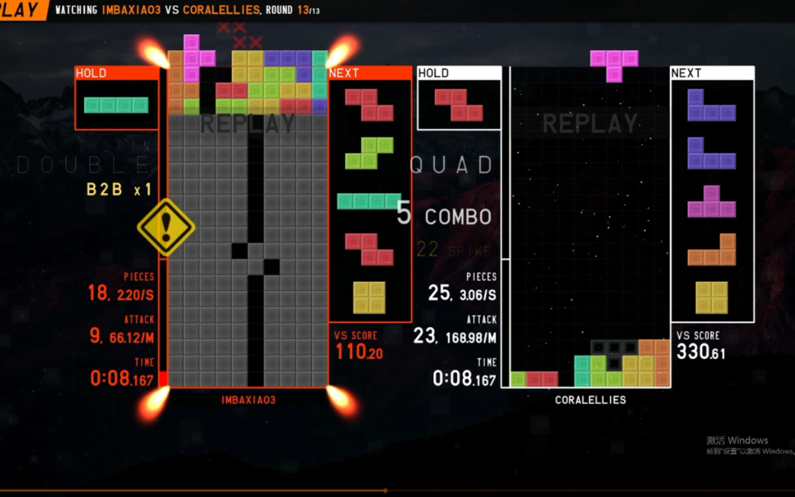
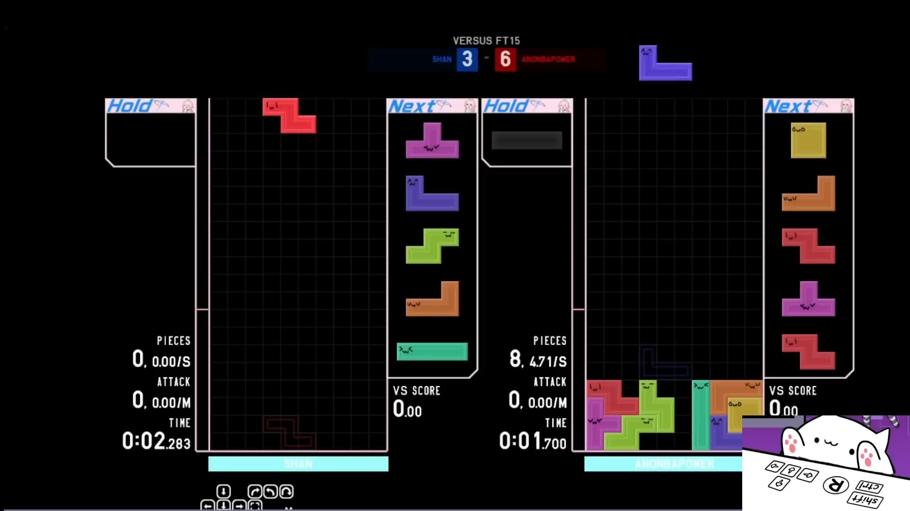

Introduction
TETR.IO is the premier competitive online Tetris platform that has redefined how millions of players experience the world's most iconic puzzle game. With over 9.9 million registered players and more than 1 billion games played, TETR.IO combines the classic Tetris formula you know and love with modern competitive features including ranked leagues, advanced mechanics, and lightning-fast online multiplayer. Whether you're a casual player looking to improve your skills or a competitive veteran chasing the coveted X rank, this guide covers everything you need to dominate in TETR.IO.
Developed by OSK and his dedicated team, TETR.IO runs directly in your browser with no downloads required, though a desktop client is available for enhanced performance. The game features multiple modes including 40 Lines sprint, Blitz time attack, Zen endless mode, Quick Play tower climbing, and the highly competitive Tetra League ranked system.
Getting Started

When you first launch TETR.IO, you'll be greeted by a clean, minimalist interface. Here's what you need to know to get started:
Creating an Account: Visit tetr.io and click "Tetra Channel" to create a free account. This unlocks ranked play, leaderboards, achievements, and replay saving. You can also play without an account in solo modes.
Understanding the Interface: The game board is a standard 10×20 grid (with 20 additional hidden rows above for piece entry). On the left side, you'll find the Hold Queue where you can store one piece for later use. On the right, the Next Queue displays up to 5 upcoming pieces, giving you plenty of time to plan your strategy.
Basic Controls: Use the left and right arrow keys to move pieces horizontally, the up arrow or X key to rotate clockwise, Z key for counter-clockwise rotation, and the down arrow for soft drop. Press Space for a hard drop (instant placement). The C key or Shift activates the Hold function. All controls are fully customizable in the Config menu.
Your First Game: Start with Quick Play mode to get a feel for the mechanics. You'll climb a 10-floor tower against increasingly challenging opponents. This mode teaches you the core competitive concepts including garbage line management, attack speed, and survival techniques.
Basic Tips
Mastering TETR.IO begins with building solid fundamentals. These tips will help you progress from a beginner to a competent player:
1. Always Keep Your Surface Flat: The most important skill in any Tetris game is maintaining a flat, even surface. Avoid creating holes (empty cells buried under blocks) as they force you to waste pieces filling gaps. Build consistently across the width of the board.
2. Reserve the Right Column for Tetris: The classic strategy of stacking pieces with a slight slope toward the right column, leaving it open for the I-piece to score a 4-line clear (Tetris), remains highly effective. A Tetris sends 4 garbage lines to your opponent in multiplayer, making it the most efficient attack per piece.
3. Use the Hold Queue Wisely: The Hold function lets you store one piece for later. Save I-pieces for when you need a Tetris, or use them to clear a critical double. Don't be afraid to switch between your current piece and held piece to find the optimal placement.
4. Learn to Downstack: When garbage lines fill your board, prioritize clearing them efficiently. Downstacking means removing garbage lines to prevent topping out. Focus on creating line clears that remove multiple garbage rows simultaneously rather than just building higher.
5. Practice Speed Gradually: Don't sacrifice accuracy for speed. Start by placing pieces correctly, then gradually increase your speed as muscle memory develops. TETR.IO's Zen mode is perfect for this — it's endless, stress-free, and awards experience points.
6. Watch the Next Queue: With 5 pieces visible in the preview, you can plan several moves ahead. Look for opportunities to set up T-spins, combos, or Tetris clears by anticipating which pieces are coming.
Advanced Strategies

Once you've mastered the basics, it's time to explore the advanced mechanics that separate good players from great ones:
T-Spins: The Ultimate Weapon
T-spins are among the most powerful techniques in TETR.IO. A T-spin occurs when you rotate a T-piece into a tight space using wall kicks, and the resulting line clear earns bonus attack power. A T-Spin Double sends 4 lines (equivalent to a Tetris), while a T-Spin Triple sends 6 lines. Back-to-back T-spins earn additional bonuses, making them devastating in ranked play.
To perform a T-spin: create an overhang (a block extending over an empty space), then rotate the T-piece into the gap using the corner detection system. Practice in Zen mode until the movement becomes second nature.
Back-to-Back (B2B) Chains
TETR.IO features a sophisticated B2B system. When you perform consecutive "special" clears (Tetrises, T-spins, or all-spins), each successive clear earns +1 bonus attack. At B2B count 4 or higher, the system begins charging a "Surge Attack" — a powerful delayed attack that can overwhelm opponents. Mastering B2B chains means consistently alternating between Tetrises and T-spins to maximize attack output.
Combo Stacking
Combos occur when you clear lines with consecutive pieces without a miss. Each successive combo sends increasing amounts of garbage. A 10-combo can send over 50 lines in a single burst! The key to effective combos is creating a "well" (a narrow column, usually 1 wide) that you can continuously clear with different piece shapes. The 2-wide and 4-wide are popular combo setups that balance risk and reward.
Opening Strategies
In competitive Tetra League matches, your opening moves set the tone. Popular openers include:
• Perfect Clear Opener (PCO): A precisely arranged sequence of the first few pieces that clears the entire board, sending a powerful initial attack and establishing early momentum.
• TKI Opening: A classic opening that quickly transitions into a Tetris stack while maintaining flexibility for T-spins.
• DT Cannon: A T-spin setup that can be repeated multiple times, generating consistent attack pressure.
Passthrough Mechanic
TETR.IO's unique "passthrough" (or "穿甲弹") mechanic allows you to counter-attack through incoming garbage. If you perform an attack within a very short window (default 333ms) after receiving garbage, your attack bypasses the garbage blocking system and hits your opponent directly. This creates incredible comeback potential and rewards fast reflexes.
Pro Tips

For players aiming to reach the highest ranks (A through X), here are the techniques that define top-level play:
1. Master the SRS+ Rotation System: TETR.IO uses SRS+ (Super Rotation System Plus) as its default rotation system, which includes symmetrical I-piece wall kicks and 180-degree rotation support. Understanding every kick in the SRS+ table allows you to fit pieces into seemingly impossible spaces. Spend time in Zen mode experimenting with unconventional rotations.
2. Optimize Your PPS (Pieces Per Second): Top players maintain 3-5 PPS consistently while making optimal placements. Practice placing pieces quickly without looking at them directly — use peripheral vision and spatial awareness. The goal is to develop "blind" placement muscle memory.
3. All-Spin Techniques: Beyond T-spins, TETR.IO recognizes spins with other pieces (S, Z, L, J) as "all-spins" that sustain B2B chains. These advanced techniques expand your attack toolkit significantly. For example, an S-spin or Z-spin can clear lines that a normal placement cannot, while still counting as a special clear for B2B purposes.
4. Garbage Management and Targeting: In Tetra League, understanding how garbage targeting works is crucial. The system considers factors like attack speed, total damage dealt, and recent activity. Focus your attacks on players who are struggling rather than those who can easily downstack. When receiving garbage, immediately identify the most efficient clear to reduce your stack height.
5. Performance Optimization: For competitive play, every frame matters. Use Chrome or the TETR.IO Desktop client for best performance. Set Graphics to at least "Good" and ensure your GPU is being utilized. Enable "Render at Low Resolution" if you experience frame drops. Close unnecessary browser tabs and applications. The desktop client applies performance patches that significantly improve consistency.
6. Study Replays: TETR.IO has an excellent replay system. After each multiplayer match, save and review your replay. Look for wasted pieces, missed opportunities for T-spins, and moments where your stacking could have been more efficient. Compare your play against higher-ranked opponents to identify specific areas for improvement.
7. Warm-Up Routine: Before ranked sessions, warm up with 2-3 games of Quick Play or a few minutes of Zen mode. Practice specific techniques like T-spin doubles, perfect clear openers, and combo setups. A proper warm-up improves your consistency by 20-30% in ranked matches.
8. Understand the Ranking System: TETR.IO's rank system spans from D (beginner) through X (elite). Each rank has sub-divisions that track your progress. Your rank is determined by your TR (Tetra Rating), which increases with wins and decreases with losses. The amount of TR gained or lost depends on the relative skill of your opponent — beating higher-ranked players gives more TR.
Game Modes Overview
TETR.IO offers a diverse range of game modes to suit every playstyle:
40 Lines: The ultimate sprint mode. Clear 40 lines as fast as possible and compete on global leaderboards. The current world records are in the low 30-second range. Focus on consistent Tetris stacking with minimal hesitation.
Blitz: You have 2 minutes to score as many points as possible. The game speed increases as you clear lines, with progressively faster piece drops. The speed level system requires you to clear more lines per level, creating escalating pressure. Top scores exceed 9 million points.
Zen: The relaxation mode with no time limit and no top-out condition (the board resets if you fill it, but your score and level continue). Perfect for practice, warming up, or simply enjoying the beautiful parallax backgrounds as you climb through visual layers.
Quick Play: Climb a 10-floor tower in this single-player progression mode. Each floor introduces new challenges including opponents with increasing skill, environmental modifiers, and unique gameplay mods. Achievements provide additional challenges like completing runs with No Hold or Invisible pieces.
Tetra League: The competitive ranked mode. You're matched against players of similar skill in head-to-head duels. First to win a set number of rounds advances. This is where all the advanced strategies come into play — B2B chains, combos, T-spins, and garbage management determine your fate.
Custom Games: Create public or private rooms with fully customizable rules. Adjust garbage settings, piece speed, rotation systems, and enable experimental features. Perfect for playing with friends or practicing specific scenarios.
Conclusion
TETR.IO represents the pinnacle of competitive Tetris in the browser. Its combination of polished gameplay mechanics, robust online infrastructure, and active community of nearly 10 million players makes it an essential destination for anyone who loves Tetris. Whether you're grinding through the ranks in Tetra League, chasing world records in 40 Lines, or simply enjoying a relaxing Zen session, TETR.IO offers something for every skill level.
Remember that improvement takes time. Focus on building consistent fundamentals before attempting advanced techniques, and don't get discouraged by losses — every match is a learning opportunity. The TETR.IO community is incredibly welcoming, and the official Discord server is an excellent resource for finding practice partners, strategy discussions, and tournament information.
The game's developer OSK continues to update TETR.IO with new features, balance adjustments, and quality-of-life improvements, ensuring it remains at the forefront of competitive puzzle gaming. Jump in, start climbing that tower, and discover why TETR.IO has become the go-to platform for competitive Tetris worldwide!